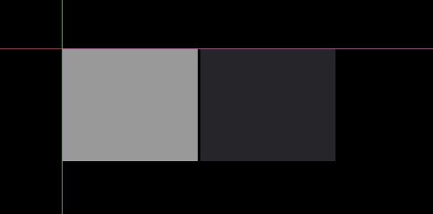
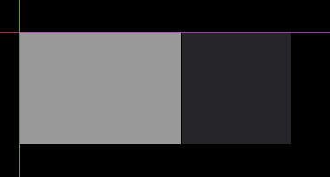
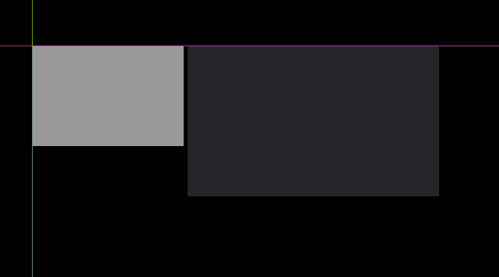
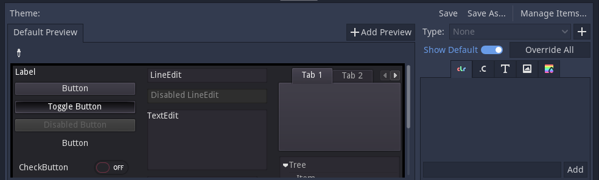

My experience with Godot
*This is my attempt at rewriting the original article, Since that one
wasn't well structured and a few of my opinions had changed since then*
After spending some time making Cello in Godot's UI system, I have to
say it has been the most fun I have had making any GUI application,
It's not perfect by any means but it is extremely good.
Editing
The editor is the main part that makes it fun, The Godot Engine's editor
is extremely capable and previewing the ui in editor & hot reloading (to
some extent) ui code is a wonderful experience
Most things can be easily visualized and with Godot's powerful scene
system, Your UI can be as modular as you like, It also allows for easy
reusability in code, Need a button in a specific color, create a scene
for it and drag and drop it where ever you need it.
No compile step or commands to run also is really nice (in comparison to
something like GTK)
Godot's Node system also works wonderfully well for GUI, since
everything is a child of some other thing and the structure works really
well for me mentally.
A visible display of what signals are connected where also helps
visualize interactions a lot more neatly.
Code Editor, UI Editor all being under one window is pretty convenient
too.
No complaints here, the experience you get is really good, I don't think
of them as complaints but there are a few places it could be improved in
my opinion, Theme Editor
UI System
In my opinion, The UI system in godot while not capable enough to fit
every single use case in the world (is there any software that does?),
it will easily fill 99.999% of them. Despite being part of a game engine
whose main focus as you can guess, is making games…, the UI system is
very capable and doesn't assume it's environment is always a game.
Responsiveness
While I don't think it can beat the web here, it does a really good with
little effort, A bit of messing in Project Settings can yield usable
results. (for usable at least), You just need to set the
2d/window/stretch settings as you need.
These are mine for Cello, which have so far worked fine for me.
- Mode: disabled
- Aspect: ignore
- Shrink: 1 (default)
Layout
Godot Docs Page
*I highly suggest you take a read through it if you're interested, It
explains everything in a much better way than I could.
The layout system I am most used to is definitely CSS Flexbox, there is
just something about it resizing to fit the child neatly that is
intuitive. A layout that tries to fit everything as compactly as it can
(like awesome's wibox.layout.fixed.<orientation>) also makes sense.
Godot doesn't really do either of those, well not in the way I am used
to anyway, Godot's main layouting power comes in the form of 2
containers, VBoxContainer & HBoxContainer, both of them initially
try to fit everything as compactly as possible, but this doesn't really
work as you'd expect, every child widget tends to by default, not
request any space at all, which leaves them all at 0px width (so not
visible).
To fix these each widget (Godot calls them Nodes but I am going to use
Widget & Node interchangeably), has some size flags to determine its
behaviour when requesting space. They are:
- Expand
- Fill
- Shrink Center
- Shrink End
and a stretch ratio; I am going to ignore Shrink Center & Shrink End
since so far I have not had the need to use them. Fill should be on at
all times or it will get really confusing, I am still not entirely sure
on what it does, I guess "Should I fill the space allocated to me?"
Expand is the main one, it says "I will take up as much of my parent's
space as possible", So for example: 2 children nodes both having expand
= true, would look like (they divide the parent's space evenly)

Then if this isn't enough for you, it often isn't, Stretch Ratio can
help you out, it determines how much of the parent's space the child is
willing to gobble up, for example 1 is 100% of the space, 0.5 is 50% and
so on and so forth, this is a 6:4 stretch ratio

Make sure your ratio sums up to 1, or it won't make sense.
Of course there are also times when you need pixel perfect sizes for
things, this is where any Control node's rect_min_size property comes
in, It's comparatively simple, You simply define how many X and Y pixels
you want.

This is after disabling Expand & Fill as they interfere, Fill is mostly
fine but if you want your child's height to be less than your parent's
height, turn it off.
Overall I wouldn't say it is the most intuitive system out there, it
takes a while to know what trick to use for it to behave but its usable
at least.
Styling
This was one the main factors in me deciding to try out Godot, The UI
styling is very capable and excellent in its class, I was looking for a
GUI framework that could be easily styled that wasn't GTK & Web.
I wouldn't say its perfect, I would have preferred a more CSS like
approach with selectors and properties that apply to all widgets but its
passable, for maximum styling on individual widgets, You might need to
wrap many of them in a Panel tho.
The theme system is pretty capable, it applies to the widget whose
property it is and any child widgets, without overriding a theme from a
parent widget further up in the hierarchy; and the editor experience for
most properties is very good.
1. Rounded Corners for images \[1\]
While you can apply corner-radius for most theme-able widgets, a
surprising exceptions is TextureRect, the fix I found was to use
this shader from someone, I lost the source apologies.
` glsl
shader_type canvas_item;
render_mode blend_mix,unshaded;
uniform vec4 color : hint_color = vec4(1.0, 1.0, 1.0, 1.0);
uniform float radius : hint_range(0.0, 1.0) = 0.0;
uniform vec2 size = vec2(1.0, 1.0);
void fragment() {
vec4 texture_color = texture(TEXTURE, UV);
COLOR = texture_color * color;
vec2 size_ratio = vec2(max(1.0, size.x / size.y), max(1.0, size.y / size.x));
float half_radius = 0.5 * radius;
vec2 dist_max = half_radius / size_ratio;
vec2 edge_pos = clamp(UV, dist_max, 1.0 - dist_max);
float edge_dist = distance(UV size_ratio, edge_pos size_ratio);
COLOR.a *= step(edge_dist, half_radius + 0.000001);
}
`
2. Fonts
Godot's system is good currently and allows a lot of flexibility
when defining what font to use, allowing you to toggle filtering /
not use vector fonts etc. But its inability to use fonts from the
system is a bit annoying, I have to package every font I want with
the project; That is probably fine for a game but picking up fonts
from the system would be useful functionality.
And from a bit of messing around, looks like the only way to use
things like bold italic and
under
line in the general UI, is to use a RichTextLabel
that accept BBcode markup, and even for that you need to define
separate fonts for each weight / slant you want. :/ No fancy
variable fonts here.
For other widgets, if there is no font property for it, you're out
of luck.
3. Theme Editor
You might call this a nitpick, but it is something worth nothing I
feel. This is what the default theme editor looks like and while its
certainly usable…

I think it's a bit more confusing than it should be, You have to
select what you want to change from the Type: drop down menu,
instead of intuitively clicking on one of the widgets in the preview
to modify it.
I'd prefer just the preview window without all the buttons at the
top, and a sidebar with all the available properties in one
condensed view for modification.
TODO: Create mockup
GDScript
I decided that to get the most out of the box experience, I would use
Godot's own builtin scripting language (called GDScript) and also
because it integrated the best with the Engine, (C\# also integrates
very well). While I wouldn't call it unusable, It certainly was not
fun to use.
The syntax which is mostly copied from Python is fine… Some things
taking several lines when they shouldn't need to is a bit frustrating
but it's fine.
\[2\] GDScript recently gained support for Static Typing which is great
but to say its fragile is putting it mildly, It's optional so it's very
lightly enforced, And in some places is missing entirely. There is still
no way to define some kind of interface type over dictionary, or define
a array that will take only a certain value (There is PoolStringArray
and friends but those are only for a few data types) Signal parameters
can't be typed currently
Godot has what it calls "tool scripts", that is scripts that run
directly in the editor, (this can be used to create much more
interactive previews or some custom in editor tooling), but the main
problem I have with them is that by default the entire script is run in
its entirety, A small flaw is that if you decide to run one of your
game's scripts as a tool script, potentially to avoid writing the code
twice, The only way to exclude some game specific code to run in the
editor which would probably error it out and maybe even crash it or slow
it down a lot is to do
if Engine.editor_hint:
print("Running in editor")
return
which is just ugly in a word, I'd rather a way alongside the if check
somewhat like this
editor func only_in_editor():
print("I only run in the editor")
Definitely a nitpick, but true private functions would be nice to go
along with the static typing
Also although Godot's node system is wonderful in most cases, in a few
places it feel just kinda sticky, like the way to run functions from
other script files (This is very basic stuff) is to have 2 scripts like
this:
extends Node
func greet(name: String) -> String:
return "Hello there, " + name
&
extends Node
var hello = preload("res://hello.gd").new()
func _ready() -> void:
print(hello.greet("Jeffery"))
This might be fine, but I just don't like it :| A proper import / export
system would be nice to see
Tween nodes which are used for animation but are meant to be used
almost entirely from within code become a bit annoying after some time.
\[3\]
Maybe I was expecting a bit too much though, It's not designed for a
lot of this, but in my opinion a lot of it leads to simply better /
neater code or at least it does and static typing even helps me
significantly when writing code.
Other
As for performance, while I won't call it light weight , its not too
outrageously intensive, as long as you tone down the fps and don't go
nuts with the asset loading, it'll probably be fine… Memory usage can
get out of hand if you don't mind it tho. *I found 25 fps to be good
enough for my purposes.* For GUI alone though, it's not very good.
It definitely isn't the best if you want a accessible UI system, outside
of like translations, you won't find much of that here.
Editor Layout
The editor UI is really inflexible, while the
default layout is perfectly functional, If you want to customize it to
any greater extent than moving a few panes around, you're out of luck :/
For example, I wanted a layout with the preview and node editor in a
vertical layout to the left and a script editor to the right, But this
is not possible, Godot 4 introduces a split screen editor so that's a
start.
Footnotes:
1. This has been addressed in Godot V4.
2. This has been addressed in Godot V4.
3. This has been addressed in Godot V4.